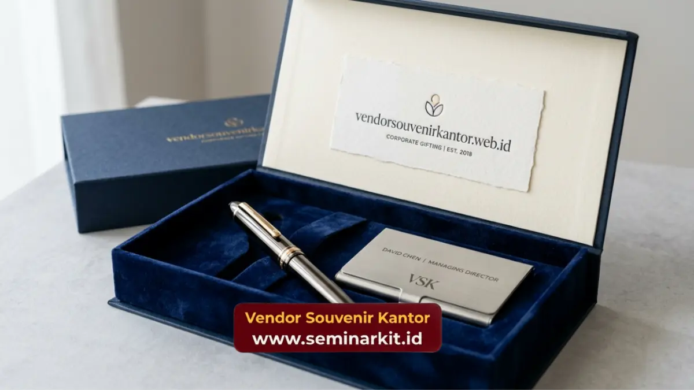

Souvenir corporate gifts untuk klien adalah merchandise premium yang diberikan perusahaan kepada klien atau mitra bisnis sebagai bentuk apresiasi sekaligus penguat hubungan jangka panjang.
Pemberian souvenir ini biasanya dilakukan pada momen penting seperti penandatanganan kontrak, kunjungan bisnis, atau perayaan kerja sama.
Vendorsouvenirkantor.web.id menyediakan pilihan souvenir corporate gifts custom logo yang dirancang khusus untuk menjaga kesan profesional di mata klien Anda.
- Souvenir corporate gifts untuk klien membantu memperkuat kepercayaan dan loyalitas dalam hubungan bisnis.
- Pemilihan produk sebaiknya mencerminkan kesan eksklusif dan kualitas tinggi.
- Momen pemberian souvenir memengaruhi persepsi klien terhadap profesionalisme perusahaan.
- Custom logo pada souvenir memperkuat brand recall setiap kali produk digunakan klien.
- Vendorsouvenirkantor.web.id siap membantu mewujudkan souvenir corporate gifts sesuai kebutuhan relasi bisnis Anda.
Mengapa Souvenir Corporate Gifts Penting dalam Hubungan dengan Klien?
Souvenir corporate gifts penting dalam hubungan dengan klien karena berfungsi sebagai simbol apresiasi yang memperkuat rasa dihargai dari pihak klien terhadap kerja sama yang terjalin.
Dalam konteks bisnis Indonesia, pemberian souvenir kepada klien juga menjadi bagian dari etika relasi profesional yang membantu membangun kedekatan personal dalam hubungan formal.
Souvenir yang dipilih dengan tepat dapat meninggalkan kesan mendalam yang berdampak pada keberlanjutan kerja sama di masa depan.
Karakteristik Souvenir Corporate Gifts yang Cocok untuk Klien
Souvenir corporate gifts untuk klien sebaiknya memiliki karakteristik berbeda dibandingkan souvenir untuk keperluan internal.
Klien dan mitra bisnis umumnya lebih menghargai produk dengan kesan eksklusif, kemasan rapi, dan kualitas bahan yang terjaga.
Kesan Premium dan Eksklusif
Produk seperti tumbler stainless steel berkualitas tinggi, tas kerja kulit sintetis premium, atau plakat penghargaan custom memberikan kesan lebih eksklusif dibandingkan souvenir standar. Kesan ini penting untuk mencerminkan level profesionalisme perusahaan Anda di mata klien.
Relevansi dengan Kebutuhan Klien
Souvenir yang relevan dengan aktivitas sehari-hari klien, misalnya alat tulis premium untuk klien korporat atau gadget accessories untuk klien di industri teknologi, cenderung lebih dihargai karena memberikan nilai fungsional tambahan.
Kemasan yang Rapi dan Profesional
Kemasan turut memengaruhi persepsi klien terhadap kualitas souvenir. Kotak hadiah dengan finishing rapi dan label bermerek memberikan kesan lebih serius dan terencana dibandingkan pembungkusan seadanya.
Kapan Waktu Terbaik Memberikan Souvenir Corporate Gifts kepada Klien?
Waktu pemberian souvenir corporate gifts kepada klien sebaiknya disesuaikan dengan momen strategis dalam hubungan bisnis.
Seperti awal kerja sama, perayaan pencapaian target bersama, atau akhir tahun sebagai bentuk apresiasi tahunan.
Pemberian pada momen yang tepat akan lebih berkesan dibandingkan pemberian tanpa konteks yang jelas.
Saat Penandatanganan Kontrak atau Kerja Sama Baru
Momen ini menjadi kesempatan baik untuk memberikan kesan pertama yang positif kepada klien baru sekaligus menunjukkan komitmen perusahaan terhadap kualitas kerja sama.
Saat Kunjungan Bisnis atau Meeting Penting
Souvenir corporate gifts yang diberikan saat kunjungan bisnis dapat memperkuat kesan profesional sekaligus menjadi pengingat visual mengenai perusahaan Anda setelah pertemuan berakhir.
Pada Momen Perayaan Tahunan atau Hari Besar
Pemberian souvenir pada momen akhir tahun atau hari besar tertentu membantu menjaga hubungan tetap hangat meskipun tidak sedang ada transaksi bisnis aktif.

Nilai Jual Souvenir Corporate Gifts untuk Memperkuat Loyalitas Klien
Souvenir corporate gifts yang tepat tidak hanya berfungsi sebagai hadiah, tetapi juga sebagai investasi dalam membangun loyalitas jangka panjang.
Klien yang merasa dihargai cenderung lebih terbuka terhadap negosiasi lanjutan dan lebih loyal terhadap perusahaan dibandingkan kompetitor yang tidak memberikan perhatian serupa.
Selain itu, souvenir dengan custom logo yang digunakan klien secara rutin, seperti tumbler atau tas kerja.
Secara tidak langsung memperluas eksposur brand perusahaan Anda ke lingkungan kerja klien tersebut.
Termasuk kepada rekan kerja dan mitra lain yang mungkin melihat produk tersebut.
Percayakan Souvenir Corporate Gifts Klien Anda kepada Vendorsouvenirkantor.web.id
Membangun hubungan bisnis yang kuat membutuhkan perhatian pada detail, termasuk dalam pemilihan souvenir corporate gifts untuk klien.
Vendorsouvenirkantor.web.id membantu perusahaan Anda menghadirkan souvenir custom logo berkualitas dengan proses konsultasi yang mudah dan hasil produksi yang profesional.
Kunjungi vendorsouvenirkantor.web.id sekarang untuk mendiskusikan kebutuhan souvenir corporate gifts klien Anda dan dapatkan rekomendasi produk yang sesuai dengan momen bisnis yang akan datang.
Souvenir corporate gifts untuk klien merupakan bagian penting dari strategi menjaga hubungan bisnis yang profesional dan berkelanjutan.
Pemilihan produk yang tepat, momen pemberian yang strategis, serta kualitas kemasan turut menentukan kesan yang diterima klien.
Wujudkan souvenir corporate gifts terbaik bersama vendorsouvenirkantor.web.id untuk memperkuat setiap relasi bisnis perusahaan Anda.

Banner promosi: klik gambar untuk langsung terhubung ke WhatsApp tim sales.